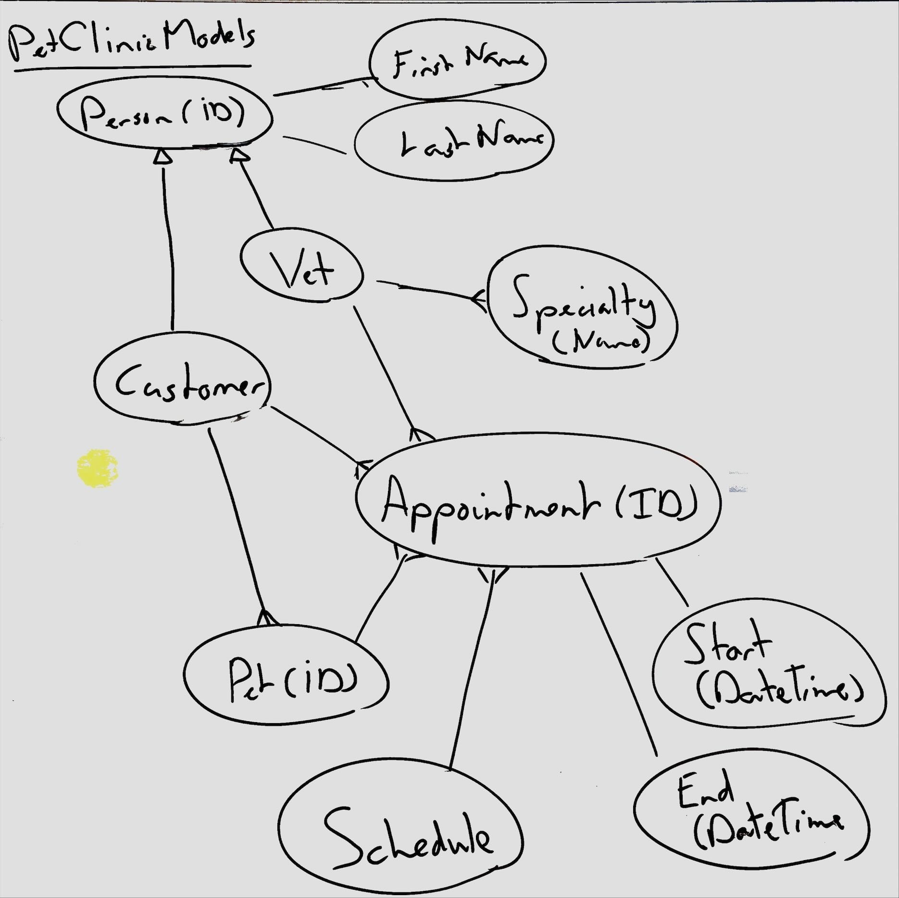

Whiteboarding Models
Draw the key facts about the concepts of your business domain on the whiteboard. Focus on types and the links between them, not the underlying structure.

Draw just the facts
A fact is a piece of information that is true about the business domain. Draw only types that are known to exist in the domain. Draw only relationships that are known to exist in the domain. Draw only types and relationships in the domain that the software needs to know about.
Draw circles instead of boxes
The dominance of ER and UML modeling techniques in creating software designs is a minor tragedy. By drawing boxes of entities (whether tables or classes) and then putting the properties of those entities inside the boxes, you think about the structure of the data too much and too early.
To avoid this trap, simply draw circles for each type (entity, class, concept) instead. To add a property, relationship, or other detail about the type, draw another circle, and link the circles with a line. By working this way, you do not introduce a hierarchy of types vs properties, and you can iterate on the design on the whiteboard and discover the eventual hierarchy as you go.
Draw crow's feet for one-to-many or many-to-many relationships
To show that a link between two types is a one-to-many or many-to-many relationship, draw a crow's foot on the end of the line.
Draw arrows for inheritance
If a certain type is a specialization of another type, draw an open-head arrow from the specialized type to the general type.
Don't use inheritance unless you need it.
Draw the same concept multiple times
If you are drawing a large model, avoid drawing super-long lines that are hard to trace. Instead, you can draw the same type a couple of times in different places on the whiteboard so that you can show all its relationships.
Write the primary identifier of a type inside the circle
If a type has a single primary identifier in the business domain, write it inside the circle, right after the type name, in brackets. For example, "Bank Account (IBAN)".
Avoid specifying all facts on the whiteboard
The whiteboard is a tool for thinking. It is not necessary to specify all facts on the whiteboard. Instead, focus on the facts that are most important to the software design.
While you can draw TLM or ORM diagrams on a whiteboard, the addition of formal syntax and semantics makes it harder to contribute for those not trained in the technique. It is often better to stick to simpler diagrams and focus on the conversation of what the key facts are and how the software should support such facts.
Add examples of facts
A few pieces of concrete example data help a lot to clarify the model. Especially for more complex domain concepts, add some concrete examples, usually as a table of sample data.